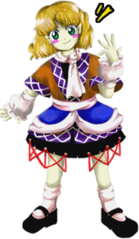

- Welcome to Touhou Wiki!
- Please register to edit. For assistance, check in with our Discord server or IRC channel.
Parsee Mizuhashi
Parsee Mizuhashi mizɯhaɕi paɽɯ̥si (♫) | |
|---|---|
|
Parsee Mizuhashi in Subterranean Animism The Jealousy Beneath the Earth's CrustMore Character Titles | |
| Species | |
| Abilities |
Manipulation of jealousy |
| Occupation |
Bridge Overseer |
| Location | |
Music Themes | |
| |
Appearances | |
| Official Games | |
| |
| Print Works | |
| |
Parsee Mizuhashi (水橋 パルスィ Mizuhashi Parusi) is a hashihime, or bridge princess, who guards the "bridge" between the surface world and the Underworld. She is able to control the jealousy in others.
General Information[edit]
Parsee first appeared as the stage 2 boss of Subterranean Animism.
Personality[edit]
Parsee harbors intense feelings of jealousy due to being despised. No matter what situation the other person may be in, she'll always be jealous of it. Even if the other person is actually less fortunate, she will be jealous of the fact that they're not jealous. In this way, her jealousy is quite irrational. This isn't to say Parsee is actually unfortunate. If you were to talk to her directly, she would come off as completely normal – even a bit cheerful – but this masks the jealousy that she's actually feeling, and afterwards she will end up despising you and talking behind your back.
Ability[edit]
- Manipulation of Jealousy
It is an ability from the legend of Hashihime. As a youkai who can be called the very embodiment of jealousy, she is able to manipulate those feelings in others. In relation to humans, it is a dreadful ability that can easily destroy them. She lives off of seeing the lives of those she introduces jealousy into being destroyed by it. This may be the reason she was sealed underground. She herself is deep in her own jealousy.
Occupation[edit]
Parsee used to be a guardian, someone who would watch over those crossing her bridge to make sure they passed between the underground and the surface world safely. However, her own jealousy at those travelers eventually caused her to be able to control feelings of jealousy in others.
Species[edit]
The Hashihime (橋姫) is a mythical youkai that appears in various Japanese texts (Most notably the The Tale of Heike). After her husband left her and married another woman, the jealous and enraged Hashihime prays to the gods for revenge. A priest tells her a way: She has to dress herself in red and paint her face with the same color, her hair arranged with seven loops and crowned with a burning brazier, then spend 21 days under the Uji bridge while holding a metal rod. So deep was her rage and jealousy, that she actually did the entire process, becoming a vengeful youkai driven by jealousy that only appears in the vicinity of bridges that cross over water. She appears to loving couples, threatening to kill them both unless they break up right there and then. There is also a famous Noh Play about this mythological creature. [1][2][3][4]
According to ZUN in an interview in Chara☆Mel released with Cage in Lunatic Runagate Chapter 7, the term hashihito (波斯人) refers to Persians, and he thought it would be interesting to try to make a more foreign-looking character, a Persian hashihime in old-style clothes, even if she doesn't really look like a hashihime.[5]
Background Information[edit]
The name of Parsee's boss theme "Green-eyed Jealousy", as well as her midboss spell card and Double Spoiler title "The Green-Eyed Monster", are both terms used in Shakespeare's works to poetically describe jealousy.
Name[edit]
Parsee Mizuhashi (水橋 パルスィ) is her full name. Her family name Mizuhashi (水橋) means "Water" (水)) and "Bridge" (橋). Parsee is an alternative spelling of "Parsi", who are the members of the Indian Zoroastrian community. They descend from Persian Zoroastrians who emigrated to South Asia in the 8th century AD. There's another possible connexion with "Parsee" and jealousy, although this could be a coincidence; "jealousy" in Italian is "gelosia", which can also relate to "Venetian blinds". These blinds can also be called "persiana" in Italian, where that word can also mean "Persian" if in its feminine form (NB: "persiano" is the masculine form).
Some Japanese people tend to pronounce her personal name "Parsee" [paɽɯ̥si] as if it were "Parseeh" [paɽɯ̥siː] or "Parshee" [paɽɯ̥ɕiː], maybe because there's a customary rule of Japanese engineer's terms that they ought to omit the long vowel mark at the end of a word, unless it isn't a short word; for example, "アッセンブラ" (assembler) although it's normally spelled as "アッセンブラー". Therefore, the correct spelling for "パルスィ" is "パールスィー".
Design[edit]
Parsee has wavy blond hair and green eyes, and her skin appears to have pale chartreuse tint to it. She wears a dress which resembles the traditional dresses of Iran's nomadic people; the top is brown with purple borders, with a white criss-cross pattern and a pink sash. The bottom is blue and purple with again the white criss-cross pattern and black with criss-crossed red strings hanging on the bottom edge. She has a pink scarf tied around her neck and pink puffy arm socks. Her SA appearance and other official artworks depict her with pointed ears.
Story[edit]
- Subterranean Animism
In each scenario, Parsee wonders why a human has come to the Underworld. She is also unaware of the youkai that communicates with the heroine, which leads to various complications.
In Reimu Hakurei's story arcs, Parsee wonders if Reimu is there for the "cursed powers" or, alternately, if she is there because of the earthquakes. With Marisa Kirisame, Parsee warns the heroine against proceeding farther underground. In all cases, whether due to jealousy/anger with Reimu or Marisa's refusal to turn back, Parsee attacks and is defeated by the heroine.
- Main article: Reimu & Yukari Arc
As Reimu descends underground, wondering how deep she has to go, Parsee shows up and asks why a human would need to get to the Former Capital, and asks if she's looking for their "cursed power". While Yukari Yakumo explains to Reimu that the youkai underground are strong, Parsee begins to get jealous of Reimu (without even knowing who she is) and attacks. Upon defeat, Yukari explains to Reimu how Parsee is a youkai driven by jealousy.
- Main article: Reimu & Suika Arc
As Reimu descends underground, wondering how deep she has to go, Parsee shows up and asks why a human would need to get to the Former Capital, and asks if she's looking for their "cursed power". Suika Ibuki pipes up and says they don't need the cursed power, then immediately asks if she's the "Bridge Princess". Parsee, surprised that they know who she is, starts asking Reimu questions that she has no idea how to answer. Suika explains that she's a youkai driven by jealousy, and Parsee starts to grow tense at thinking that they're looking down on her, and attacks a confused Reimu. Upon defeat, Reimu scolds Suika for holding her own conversation.
- Main article: Reimu & Aya Arc
As Reimu descends underground, wondering how deep she has to go, Parsee shows up and asks if they are worried about the earthquakes above ground. Aya Shameimaru asks if she will do something interesting, to which Parsee throws the same question at them, asking if they'll do anything interesting. Reimu says no, explaining that they can always go see something interesting. Parsee becomes jealous, and attacks Reimu to relieve her boredom. Upon defeat, Reimu confronts Aya and thinks Aya just sent her to get material for her newspaper.
- Main article: Marisa & Alice Arc
As Marisa descends underground, she wonders how many "floors are left in the dungeon". Alice Margatroid tries to explain that caves don't have "floors", as Parsee enters and replies that they're on "floor B666", calling the cave an underground skyscraper. Marisa gloats to Alice that she was right about the "floors", while Parsee asks if she's crazy because she's "talking to herself". Marisa asks if she's the "boss of the dungeon", and Parsee replies that she's just wasting time if she thinks going underground is a game, and attacks. Upon defeat, Marisa admits that she's just wasting time and moves on.
- Main article: Marisa & Patchouli Arc
As Marisa descends underground, Patchouli Knowledge explains that Yamame Kurodani was an earth spider that inflicts disease, a little late for their previous battle with her. Parsee enters and ask if she's exploring the underground, and Marisa says yes. Parsee replies that she's better off going back, when Marisa realizes she has to get past her and quickly tells Patchouli to look up her weak points. Parsee says that she tried to warn them, and Patchouli tells Marisa to deal with her by herself because she obviously can't look up weaknesses that quickly. Marisa tells Patchouli to look how to beat her while she's beating her, then Parsee attacks. Upon defeat, Patchouli was able to find the information (yet again, too late) that she's a Persian person driven by jealousy. Marisa wonders if Patchouli sent her just to conduct research.
- Main article: Marisa & Nitori Arc
As Marisa descends underground, she wonders how deep the cave goes. Nitori Kawashiro says that it's only a matter of time until they reach the "Ancient City". Parsee shows up an asks why they need to go to the underground city, where Marisa replies that she doesn't think she needs anything. Parsee then asks if they're lost, and says that they should return to where "the light is so dazzling". Nitori explains that Parsee controls jealousy, and that Marisa should just "beat her up" quickly. Marisa asks why she even went to the cave in the first place, and Nitori says it's because of the hot springs. While the two are talking, Parsee wonders why Marisa is talking to herself (because Parsee doesn't understand they're communicating) and wonders if anyone will mind if she just "beats up one person", then she attacks Marisa. Upon defeat, Marisa states that she still doesn't understand why they're underground, but "if hot springs are involved, it doesn't matter" then moves on.
- Double Spoiler
In Double Spoiler, Parsee used a few spell cards and had Aya Shameimaru and Hatate Himekaidou taking photos of her and her danmaku.
- Hopeless Masquerade
Parsee made a background cameo appearance in Hopeless Masquerade on the Palace of Earth Spirits and the Youkai Tanuki Forest stage. She is seen behind all other characters with a glare.
Relationships[edit]
- Suika Ibuki
Suika Ibuki appears to recognize her in Reimu and Suika's scenario of Subterranean Animism.
Spell Cards[edit]
| Name | Translated | Comments | Games | Stage | ||
|---|---|---|---|---|---|---|
| Total: 10 | ||||||
| 妬符「グリーンアイドモンスター」 | Jealousy Sign "Green-Eyed Monster" | SA GoM |
St. 2: E/N ---- | |||
| 嫉妬「緑色の眼をした見えない怪物」 | Envy "Green-Eyed Invisible Monster" | SA | St. 2: H/L | |||
| 花咲爺「華やかなる仁者への嫉妬」 | Grandpa Hanasaka "Jealousy of the Kind and Lovely" | SA | St. 2: E/N | |||
| 花咲爺「シロの灰」 | Grandpa Hanasaka "Shiro's Ashes" | SA GoM |
St. 2: H/L ---- | |||
| 舌切雀「謙虚なる富者への片恨」 | Tongue-Cut Sparrow "Hate for the Humble and Rich" | SA | St. 2: E/N | |||
| 舌切雀「大きな葛籠と小さな葛籠」 | Tongue-Cut Sparrow "Large Box and Small Box" | SA GoM |
St. 2: H/L ---- | |||
| 恨符「丑の刻参り」 | Malice Sign "Shrine Visit in the Dead of Night" | SA GoM |
St. 2: E/N ---- | |||
| 恨符「丑の刻参り七日目」 | Malice Sign "Day 7 of the Shrine Visits in the Dead of Night" | SA | St. 2: H/L | |||
| 嫉妬「ジェラシーボンバー」 | Jealousy "Jealousy Bomber" | DS | St. 2 | |||
| 怨み念法「積怨返し」 | Resentment Art "Grudge Returning" | DS | St. 2 | |||
Gallery[edit]
Parsee's sigil as seen in The Grimoire of Marisa
Additional Information[edit]
- While her character portrait in Subterranean Animism shows her as having green eyes, her sprite shows her as having blue eyes.
- Quite a few of her spell cards reference Japanese folklore (namely stories involving jealous individuals) such as "The Tongue-Cut Sparrow."
Fandom[edit]
Official Profiles[edit]
|  | ○２面ボス 地殻の下の嫉妬心 水橋パルスィ（みずはし パルスィ） 種族：橋姫 一応、地上と地下を結ぶ縦穴の番人というか守護神である。 だが、非常に嫉妬深く、楽しそうに移動している奴が気にくわない。 |
Stage 2 boss The Jealousy Beneath the Earth's Crust
Species: Bridge Princess Once, she was the protector, or guardian spirit, of the pit linking the underworld with the overworld. She watched over people to make sure that they could get to the underworld and back to the overworld safely. However, as she is extremely jealous, she couldn't stand the people who looked like they were having fun going to and fro. Whenever she saw someone like that, she would hinder their travel somehow. Jealousy only begets further jealousy, so as she went mad from her own jealousy, she became able to fan the flames of jealousy in the hearts of others. |
Official Sources[edit]
- 2008/05/25 - Subterranean Animism Demo - Trial profile (pre-official profile)
- 2008/08/16 - Subterranean Animism - Character Settings.txt (official profile)
- 2009/07/28 - The Grimoire of Marisa - Parsee Mizuhashi's Spell Cards
- 2010/03/14 - Double Spoiler - Stage 2 spell card comments
- 2010/08/26 - Oriental Sacred Place - Chapter 10 (cameo)
- 2010/09/25 - Wild and Horned Hermit - Chapter 2 (cameo)
- 2012/04/27 - Symposium of Post-mysticism
References[edit]
- ↑ "Kanawa (Iron Trivet)". Retrieved 18 Februari, 2011. Check date values in:
|accessdate=(help) - ↑ "Hashihime 橋姫 [literally "bridge princess"]". Retrieved 18 Februari, 2011. Check date values in:
|accessdate=(help) - ↑ "能面 橋姫 Noumen Hashi-hime Noh Mask Hashihime". Retrieved 18 Februari, 2011. Check date values in:
|accessdate=(help) - ↑ "The Yokai Files – Hashi Hime". Retrieved 18 Februari, 2011. Check date values in:
|accessdate=(help) - ↑ "キャラ☆メル vol.7 東方地霊殿神主インタビュー（前編）". Chara☆Mel.
| This page is part of Project Characters, a Touhou Wiki project that aims to write proper descriptions for all official characters of Touhou Project. Please keep the character page guidelines in mind when contributing. |